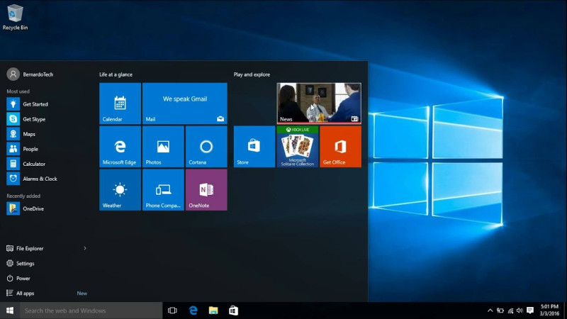

3 Reasons I Quit Windows 10
2018-12-13

I spent 8 months running Windows 10 as my main operating system. For the most part it is pretty to look at and has some interesting features. After the novelty of the eye-candy wore off. Actually using it on a daily basis left me with some minor friction burns.
So I switched to Linux Mint with the Cinnamon Desktop.
To be clear I'm not claiming Linux Mint is better than Windows 10. I don't agree with binary comparisons like that. Using any tool is highly subjective based on the workflow and goals of the individual user. What works for me, will not work for everyone.
If you use Windows 10 and enjoy it. Then keep doing what works for you.
Here's the 3 reasons why I quit Windows 10.
1. Control
Microsoft prevents me from controlling what Windows 10 can do on my system. Updates happen automatically weather I want them or not. I can tell the system to pause installing updates. But there is no way for me to stop them completely. Even when pausing, the system will still download updates. Which slows down my system and eats up bandwidth.
Microsoft forces me to use their horrible Edge Browser to open PDF's. When I'd prefer to use another application. No matter how many times I go into the configuration and change the setting it fails. Even as an Administrator, Windows refuses to acknowledge my commands or do what I tell it. Microsoft has setup Windows 10 so I do not have control over my computer.
There are other areas out of the box that Microsoft takes control of.
- Cortana
- Build-in Spyware
- Edge Browser
- OneDrive
- Auto Reboots
If I'm paying for Windows 10, either as part of a pre-built computer or on a USB drive I use to install on a custom built system. I should have control over what it is doing and when.
I should not have to hunt the internet for "How-To" guides to help me configure Windows 10 for it to become a useful operating system.
2. Menus
Windows 10, which is based on Windows 8 and 9, buries useful menus under unnecessary layers of other menus. Giving the OS a patchwork feeling.
Windows 7 and earlier versions of Windows have trained me where menus will be located. Years of muscle memory and built-up expectations where thrown out for "Convergence".
Mircosoft attempted to build a single operating system that would work across desktops, tablets, and phones. Its an ambitious goal aimed at reducing costs and expanding their software ecosystem.
Like the scientist from Jurassic Park they got so caught up in the engineering of how to do it. They never stopped to ask if they should do it. More than half of their user base was not interested in a "Convergent OS". Which is why the project failed.
I'm left with the remnants of that effort in the form of this patchwork menu system that, in places, looks like a skin placed over Windows 7.
3. Instability
My workflow with Windows 10 was disrupted by instability in how the operating system runs, along with faulty updates, and frequent required reboots.
Thankfully I only experienced one auto reboot while trying to watch a movie. At first I thought there was some kind of system fault. But after wasting 30 minutes doing research online I found this is part of how Windows 10 works. I was mildly annoyed.
But I would have been enraged if I had been in the middle of some time-sensitive important work and lost data and time to an auto reboot.
I had issues running specific productivity software. Which had worked fine under Windows 7. But was now unstable under Windows 10 on the same hardware.
Then there were reports online of a Fall 2018 Windows 10 Update that was deleting user data.
The last straw for me was when I tried to use Windows 10 for basic things like web browsing, watching YouTube, and checking my email. The built-in spyware and over-engineered eye candy slowed my system down.
After spending two hours tweaking settings to counteract these issues. I wondered why Microsoft would build an operating system that fights me for control? Instead of allowing me to use it as a tool to accomplish my goals?
I had enough and decide to backup my data and install Linux Mint. As of this writing its been about 3 week and so far Linux Mint works great. All the drivers are built-in to the OS.
All the software I use is open source and available in the software center. Now I'm able to use my operating system without having to fight, tweak, or hack the system to make it do what I want.
At this point, I see no reason why I would ever go back to using Windows for any reason.